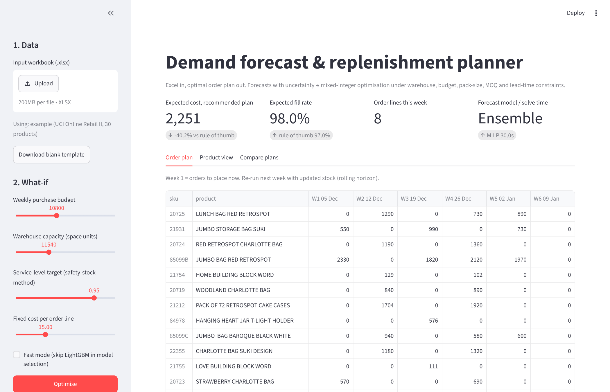
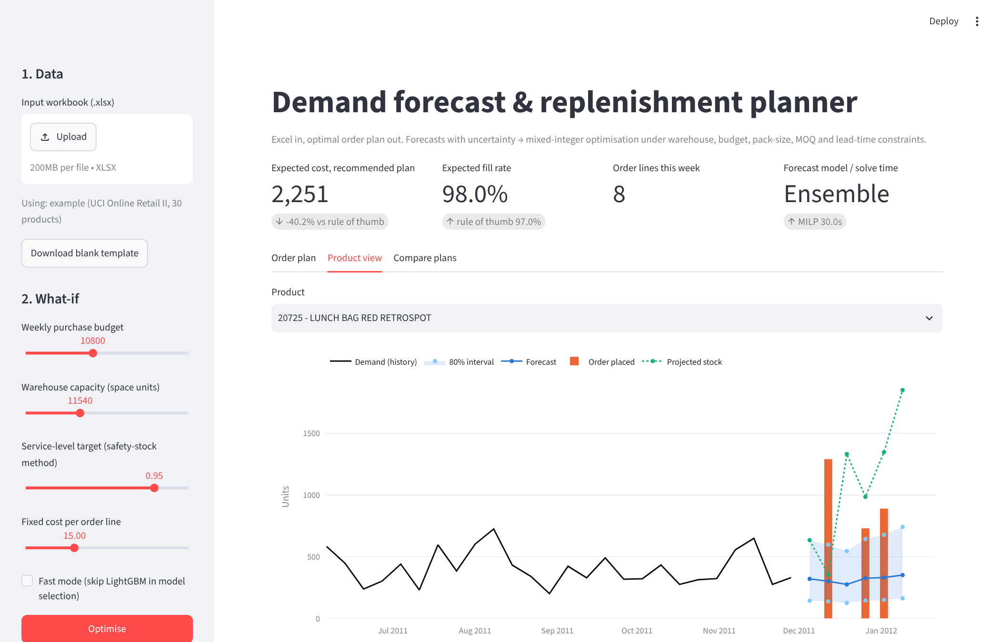
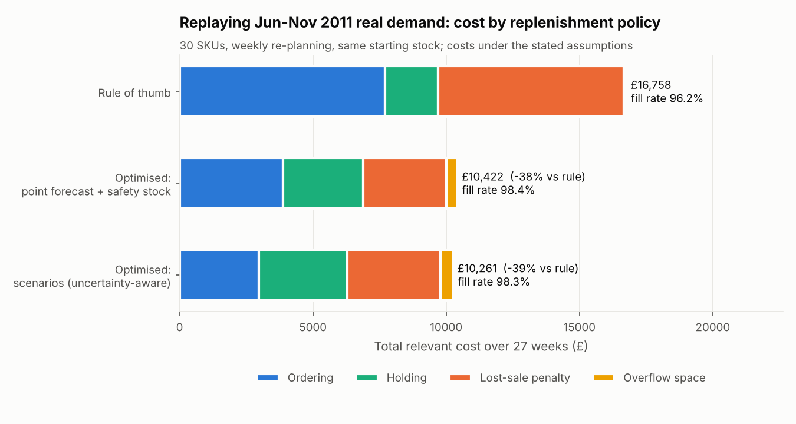
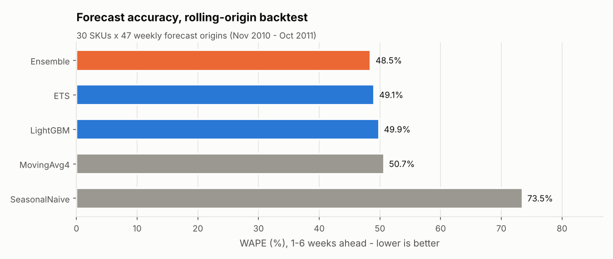

Excel In, Optimal Reorder Plan Out.
OptiStock AI combines probabilistic demand forecasting (ETS + LightGBM) with uncertainty-aware Mixed-Integer Linear Programming (MILP) to generate weekly purchase plans within your real warehouse capacity, cash budget, MOQs, and lead times.
Built for Real Operational Constraints
Point forecasts ignore tail risk. OptiStock AI models forecast error distributions explicitly and solves a multi-scenario integer program in seconds.
1. Probabilistic Forecasting
Compares 5 models (Seasonal Naive, Moving Average, Holt's ETS, LightGBM, Ensemble) in a strict no-look-ahead rolling-origin backtest and calibrates 14 tail-weighted demand scenarios.
2. Uncertainty-Aware MILP
Powered by OR-Tools + SCIP (~5,500 variables solved in 5–30s), enforcing shared weekly cash budgets, warehouse capacity, pack sizes, MOQs, and vendor lead times simultaneously.
3. Excel & Web Ready
Upload a standard Excel workbook via the interactive Streamlit dashboard or CLI, adjust budget & capacity sliders, and export ready-to-execute purchase orders.
27-Week Real Demand Replay (UCI Online Retail II)
Evaluated across 30 SKUs with weekly rolling re-optimization (Jun–Nov 2011) and verified on an unseen hold-out period (Mar–May 2011).
| Replenishment Policy | Total Cost | vs. Baseline | Fill Rate | Stock-Out SKU-Weeks | Orders Placed |
|---|---|---|---|---|---|
| Rule of thumb (order up to lead time + 2w) | £16,758 | – | 96.2% | 59 | 514 |
| Rule of thumb (best hindsight-tuned settings) | £12,852 | -23% | 99.0% | 13 | 502 |
| Optimised: Point forecast + safety stock (MILP) | £10,422 | -38% | 98.4% | 16 | 259 |
| OptiStock AI: 14-Scenario Uncertainty-Aware MILP | £10,261 | -39% | 98.3% | 20 | 198 |
Interactive App & Diagnostics
Visual decision support for operations teams: SKU-level uncertainty bands, order schedules, and policy cost comparisons.



